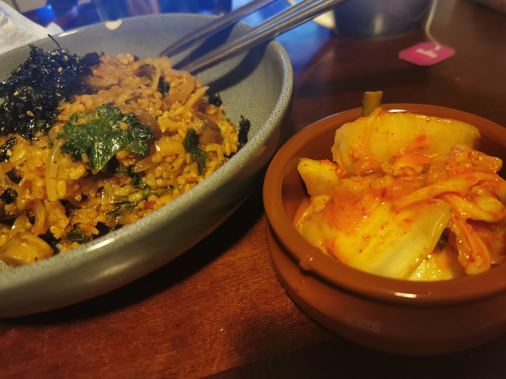

Kimchi Fried Rice

Description
Kimchi fried rice or 'kimchi bokkeumbap (김치볶음밥)' is a simple and beloved dish in Korea, often with the addition of some type of meat (my partner likes spam) or a fried egg, but just as easily made vegetarian or vegan.
With a few simple ingredients and a bit of time, you'll be well on your way to creating a delicious and traditional Korean dish. This dish is easily tweaked to suit your tastes - for example, I like to add a bit of gochujang for extra spice.
Ingredients
Makes around 4 generous servings
- vegetable oil
- 3 cups cooked rice (preferably a day old)
- 1 cup chopped kimchi (preferably Gomo Kimchi)
- 1/4 cup kimchi juice
- 1/4 cup water
- sesame oil/sesame seeds/seaweed/spam/fried egg/gochujang/whatever the heck else you want to put on/in it
Steps
- Heat the vegetable oil (NOT sesame oil), make sure it's nice n sizzly hot before you do anything
- Fry up the kimchi for a couple mins
- Add the cookied rice, kimchi juice, water and gochujang (if using). Cook for 5-10 minutes, stirring as much as your lil arms can handle
- Mix in some sesame oil if you like and take off the heat
- Serve right away nice and piping hot with whatever other junk you like, listed above or otherwise